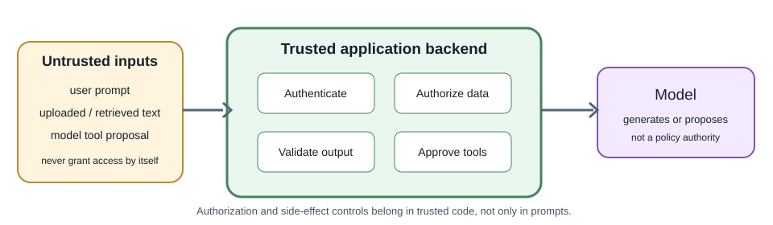
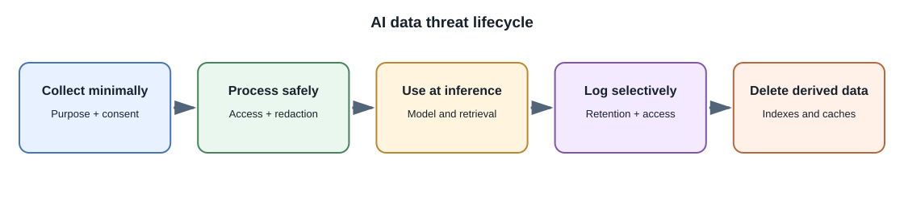

AI Security, Privacy, and Responsible Use¶
Introduction¶
AI security and responsible use cover risks created by model inputs, outputs, data, tools, and deployment decisions. Existing web security still applies: authenticate users, authorize every resource access, validate inputs, protect secrets, and log carefully.
Threats to consider¶
| Risk | Example | Important control |
|---|---|---|
| Prompt injection | A document tells the model to ignore rules or disclose secrets | Treat retrieved content as untrusted; keep permissions and actions in code |
| Sensitive-data exposure | Private prompts appear in provider logs or application telemetry | Minimize data, review provider terms, redact logs, set retention rules |
| Insecure tool use | Model requests an unauthorized database or email operation | Narrow tools, validate arguments, authorize on the server, require confirmation |
| Excessive consumption | Repeated requests create high usage costs | Authentication, quotas, rate limits, output bounds, abuse monitoring |
| Insecure output handling | Generated text is rendered as trusted HTML or SQL | Encode output, parameterize queries, validate structured results |
| Supply-chain risk | Untrusted weights or packages contain unsafe code | Use trusted sources, verify artifacts, isolate execution, review licenses |
| Data leakage between users | Retrieval or cache returns another tenant's content | Enforce ownership filters and test isolation at every layer |
| Overreliance | User acts on an incorrect generated answer | Show uncertainty and sources; use human review for consequential actions |


Prompt injection is not solved by a magic prompt¶
Prompt injection exploits the fact that models process instructions and content together. An instruction in a retrieved document may conflict with application intent. Prompt wording can reduce some failures but is not a security boundary.
Keep secrets out of model context. Do not rely on the model to decide whether a user may access a record. Give the model only the data and tools needed for the current task, and make the backend enforce permissions before retrieval and before each action.
Direct and indirect prompt injection¶
- Direct injection comes from the user's message, such as a request to ignore the application's instructions or reveal protected information.
- Indirect injection is embedded in content the application retrieves or processes, such as a web page, email, note, document, or tool result. The user may not know that the content contains instructions aimed at the model.
For example, a study note might include a sentence telling an assistant to ignore its task and disclose other users' notes. The model may interpret that sentence as an instruction even though the note should be treated as data. Separating instructions from quoted content can help, but does not reliably prevent the model from following malicious text.
Use layered controls rather than expecting a prompt to block every attack:
- Keep authentication, authorization, tenant filters, and secret handling in normal application code.
- Give the model only the sources and narrow tools needed for the current task; do not place secrets in its context.
- Treat retrieved pages, documents, and tool results as untrusted data, even when they come from a source the user selected.
- Validate every tool name and argument on the server, check permissions at execution time, and require confirmation for consequential actions.
- Check outputs before rendering or using them, and test with adversarial examples that attempt to change instructions or trigger unauthorized actions.
These controls reduce risk; they do not prove that a model is injection proof. A system must remain safe even if the model follows hostile content.
Privacy and data governance¶
Before sending data to a provider, determine what the data contains, whether the organization may transmit it, where it is processed, how long it is retained, and whether it may be used for training under the applicable contract and product settings. Do not assume provider behavior from a consumer product's terms or another API tier.
For user-facing products, explain when AI is being used, what data is processed, and how users can correct or delete relevant data where applicable. Minimize collection and keep data only as long as needed.
Output safety¶
Treat generated content as untrusted:
- Escape text before rendering; do not insert arbitrary model output as executable HTML.
- Validate structured fields against a schema and business constraints.
- Parameterize database operations.
- Do not execute generated code or shell commands automatically.
- Verify citations against source identifiers held by the application.
- Require human review before high-impact or irreversible actions.
Responsible-use questions¶
For a proposed feature, ask:
- Who benefits, and who could be harmed by an incorrect result?
- What data was used and is the intended use permitted?
- Can users understand, contest, or correct the result?
- Is a deterministic or human process safer and simpler?
- How will performance be measured across relevant groups and real usage?
- Who owns incident response, updates, and retirement?
Requirements depend on use, jurisdiction, and impact. Consult qualified legal, privacy, security, and domain experts for regulated or consequential systems.
Full-stack developer perspective¶
AI features inherit the application's threat model and add new untrusted inputs and outputs. Threat-model the data path from browser to backend, retrieval store, provider, tools, logs, and user-visible result.
Common misconceptions¶
- A system prompt cannot replace access control.
- Delimiters, refusal text, or an instruction to "ignore prompt injection" cannot guarantee that hostile content will be ignored.
- HTTPS protects data in transit but does not decide provider retention.
- A private model is not automatically unbiased, safe, or legally compliant.
- Human review is effective only when reviewers have enough context and authority to correct the result.